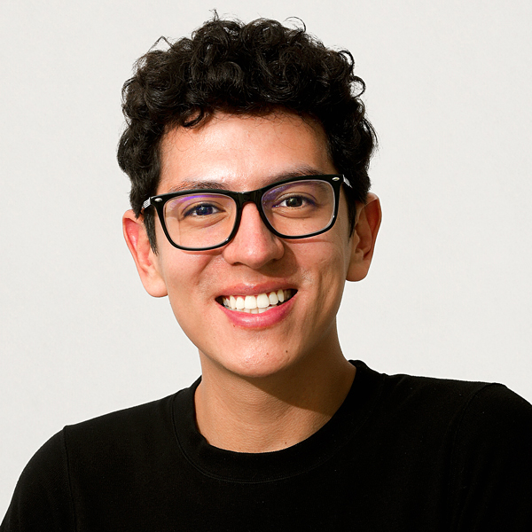

Carlos Cusguen

Summary
I’m a curious web designer with experience in branding, editorial design, and websites. Driven by engaging with others and improving design aesthetics.
Educaction
- Bachelor of Graphic Desing and Advertising - University of Santander (2009-2012)
Work experience
Skills
Brand-to-web cohesion
Time-efficient and deadline-driven
Curious and friendly work ethic
Awards and Certifications
Outstanding Professional - Universidad de Santander (2013)
Web Designer - Coderhouse (2016)
Others
My Hobbies
Contact